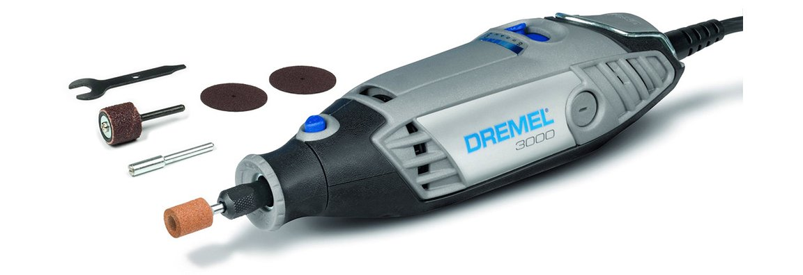

Bemutatkozás
Sziasztok!
Gosztola Gergely vagyok, elsőéves hallgató a Budapesti Műszaki és
Gazdaságtudományi Egyetem gépészmérnöki szakán.
Ezt a weboldalt az egyik tárgy házi feladataként
kellett elkészíteni, jövőbeli portfólió oldalként.
Mivel még nincs túl sok saját munkám, amit bemutathatnék,
ezért az egyik hobbimat mutatom be részletesebben.
Barkácsolás
Egyik kedvenc elfoglaltságom a barkácsolás,
apró de értékes tárgyak létrehozása.
Számomra az egyik legfőbb alapanyag a fa,
mely alkalmas a legapróbb részletek kidolgozására is.
Ettől függetlenül szoktam fémet, szövetet is felhasználni,
ha az elkészítendő termék azt megkívánja.
Már lassan 8 éve igyekszem szabadidőmet arra felhasználni,
hogy kiterveljem a következő kis projektet, aztán pár nap,
illetve hét alatt azt megvalósítsam.
Mindig vannak egyedi ötleteim is, de sokszor művészek által már
megvalósított tárgyakat próbálok minél élethűbben
rekreálni. Megmunkálási technikáim és eszközeim is
sokat fejlődtek, azonban büszke vagyok legelső elkészített
darabjaimra is. Nemrég eljutottam oda is, hogy nem én
voltam a megrendelő, hanem egy ismerős kérését
teljesíthettem. Munkáim nagy része ajándékba készül,
de most már annyi féle és fajta kis tárgyat csináltam,
hogy ideje egy kicsit csokorba fogni őket. Ezért hoztam
létre ezt a weboldalt, hogy Ti is láthassátok,
milyen élethű kis tárgyakat lehet létrehozni a saját
kezünkkel. Ezek, véleményem szerint eszmei értékben is
túlszárnyalják a bolti ajándékokat, illetve, aki kész
ilyen dologba belefogni, örömét is leli annak elkészítése
közben, és büszkeség tölti el az elkészített tárgy láttán.
Kedvenc eszközöm barkácsolás közbe

Többféle eszközt használok,
melyek megkönnyítik és meggyorsítják a folyamatokat.
Ilyen gép például a modellezéshez sok platformon ajánlott
Dremel termékcsalád egyik modellje. Méret és felhasználhatóság
szempontjából a legjobbak közé tartozik.
Kiemelkedő teljesítményét mutatja a tíz féle
választható fokozat,
illetve a percenként
akár 33 000 fordulat, mellyel még az üveget is
repedésmentesen lehet vágni vagy csiszolni.
Rendkívül sokrétű,
akár 50-60 féle szerszámfejet is be lehet fogatni.
Ezek nagyrészt csiszoló, illetve fúrófejek,
de létezik hozzá több féle vágókorong is.
Hasznosak még a marófejek, polírozó és gravírozó fejek.
Az elérhetőségeimet itt találod.